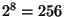
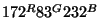
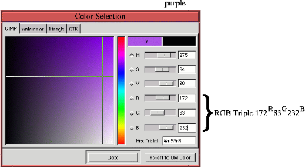
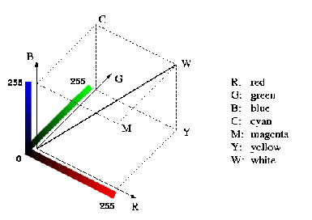
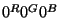
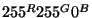
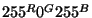
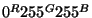

Next: 10.2
Цветовая схема HSV Up: 10.
Цветовые схемы и Previous: 10.
Цветовые схемы и
Next: 10.2
Цветовая схема HSV Up: 10.
Цветовые схемы и Previous: 10.
Цветовые схемы и
10.1 Цветовая схема RGB
Цветовая схема RGB особенно интересна, так как именно с ее помощью
формируется изображение на экране цветного монитора. Монитор смешивает три
базовых цвета, красный, зеленый и синий, в определенных пропорциях. Поэтому
видимый цвет можно представить в виде тройки чисел или как вектор внутри
трехмерного куба. Количественную долю базового цвета в составном можно
представить как число из определенного диапазона. Поскольку GIMP использует 8
бит на каждом базовом цветовом канале, мы будет рассматривать числа на отрезке
от 0 до 255 (

). Число 0 в векторе будет означать, что
соответствующий базовый цвет не используется, число 255 будет означать, что
базовый цвет присутствует в маскимальном количестве, которое может предоставить
монитор. Несмотря на то, что существуют проблемы с балансировкой белого цвета,
калибровкой и человеческим восприятием, считается, что три базовых цвета,
включенные на полную мощность, представляют белый цвет, а отсутствие всех трех
цветов представляется как черный. Конечно, этот черный цвет не может быть темнее
экрана выключенного монитора.
Поскольку здесь удобно обсуждать цвета в числовых терминах, как, например, в
главе 11,
которая посвящена цветокоррекции, введем специальную условную запись для
обозначения цветов. К примеру, пурпурный цвет, состоящий из 172 частей красного,
83 зеленого и 232 синего, будем записывать как

. Этот цвет показан
на рисунке
10.1,
Figure: Представление цвета при помощи
триплета RGB: Пурпурный=
 |
который иллюстрирует формирование цвета при помощи диалога ``Выбор
цвета''. Он появляется, если нажать кнопку мыши на текущем цвете
переднего плана или на текущем цвете фона на панели инструментов.
Этот диалог используется для просмотра RGB-цветов. Цвета можно выбирать,
передвигая мышью скрещенные направляющие, или вводя числа в соответствующие поля
диалога. Выбранный цвет отображается в прямоугольнике в верхнем правом углу
диалогового окна. Получается настоящая цифровая палитра.
Как будет показано ниже, полезно представлять себе триплеты, состоящие из
основных цветов, в виде куба, где каждому основному цвету соответствует одна из
осей. Цветовой куб для схемы RGB показан на рисунке 10.2.
Figure: Цветовой куб для схемы
RGB
 |
Каждая основная ось куба представляет количественное выражение красного,
зеленого и синего цветов на отрезке от 0 до 255. Рядом с основными осями
изображены полосы с градациями соответствующих цветов. Как нами было принято
ранее, величина 0 означает, что монитор не излучает света, а величина 255 - что
монитор излучает свет с максимальной интенсивностью. Значения между 0 и 255
соответствуют промежуточным величинам интенсивности.
Таким образом, можно представить себе пространство, где цвета являются
трехмерными векторами. Цвета можно складывать и вычитать как векторы, получая
другие цвета, содержащиеся в кубе. Точка куба, совпадающая с началом осей
координат

, соответствует полному отсутствию цвета, то есть черному
цвету. Точка куба, максимально удаленная от точки начала осей координат,
соответствует цвету с максимальной интенсивностью основных составляющих -

. Этот цвет мы
назовем белым, а соответствующую точку пометим буквой W на рисунке
10.2.
Прочие вершины куба соответствуют различным основным и второстепенным цветам.
Красный, зеленый и синий мы уже перечислили. Остальные три это циановый,
фиолетовый и желтый. По меткам на рисунке
10.2
видно, что смешение 255 красного и 255 зеленого дает цвет

, то есть желтый, 255 красного и 255 синего - цвет

, или фиолетовый, а 255 синего и 255 зеленого дают цвет

, то есть циановый.
Заметим, что главная диагональ куба, изображенного на рисунке 10.2,
показана линией, соединяющей точку черного цвета 0 с точкой белого цвета W. На
этой линии находятся цвета, состоящие из равных долей красного, зеленого и
синего цветов. Все точки на главной диагонали соответствуют градациям серого
цвета. Ближе к началу координат темно-серые цвета, ближе с точке W -
светло-серые. Главная диагональ RGB куба называется нейтральной осью,
поскольку серый цвет не имеет свойства "тон" и состоит из равных частей
красного, зеленого и синего.
Next: 10.2
Цветовая схема HSV Up: 10.
Цветовые схемы и Previous: 10.
Цветовые схемы и
Grigory Bakunov 2003-05-26